vignettes/statgenSTA.Rmd
statgenSTA.RmdThe statgenSTA (Single Site Analysis) package is developed as an easy-to-use package for analyzing data of plant breeding experiments with many options for plotting and reporting the results of the analyses.
This vignette describes in detail how to prepare data for analysis, perform analyses using different modeling engines and extract the results from the models.
The first step when modeling field trial data with the statgenSTA package is creating an object of class TD (Trial Data). This object is used throughout the statgenSTA package as input for analyses.
TD objectA TD object can be created from a data.frame with the function createTD. This function does a number of things:
TD object.TD object is a list of data.frames where each data.frame contains the data for a single trial. If there is only one trial or no column trial is defined, the output will be a list with only one item.TD object. This meta data is used to store background information about the trials. It consists of location, date of the experiment, longitude, latitude, trial design, plot width and plot length. None of these are strictly neccessary for any analysis and meta data can therefore be safely ignored. However the meta data is used when plotting field layouts, plotting trials on a map and naming plots. Meta data can be added when creating the TD object using the appropriate parameters in createTD (see 2.4). However if the data consists of multiple trials it is more convenient to first create a TD object without meta data and then add meta data using the getMeta and setMeta functions (see 2.3).After creating a TD object, data for new trials can be added to it using addTD. This function works in exactly the same way as createTD except that it adds data to an existing TD object instead of creating a new one.
Dropping one or more trials from a TD object can be done using the function dropTD.
Field data from an experiment with wheat in Chile described in detail by Lado et al. (2013) will be used as an example throughout this vignette. The experiment was performed in two locations in Chile, Santa Rosa and Cauquenes, with two different drought regimes in 2011 and 2012 for the Santa Rosa and one trial in 2012 for Cauquenes. For 384 genotypes four traits were measured in 2011, but in 2012 only grain yield (GY) was measured and the examples will focus on this trait.
For the example, first a TD object is created for the first location only. The data for the second location is then added later on. In practice all this could be done in one go.
## Create a TD object containing the data from Santa Rosa. data("wheatChl") wheatTD <- createTD(data = wheatChl[wheatChl$trial != "C_SWS_12", ], genotype = "trt", repId = "rep", subBlock = "bl", rowCoord = "row", colCoord = "col")
The TD object just created is a list with four items, one for each trial (combination of location, drought regime and year) in the original data.frame. The column “trt” in the original data is renamed to “genotype” and converted to a factor. The columns “rep” and “bl” are renamed and converted likewise. The columns “row” and “col” are renamed to “rowCoord” and “colCoord” respectively. Simultaneously two columns “rowId” and “colId” are created containing the same information converted to a factor. This seemingly duplicate information is needed for spatial analysis. It is possible to define different columns as “rowId” and “colId” than the ones used as “rowCoord” and “colCoord”. The information about which columns have been renamed when creating a TD object is stored as an attribute of each individual data.frame in the object.
The meta data will be a data.frame with four rows, one for each trial in wheatTD. The data.frame has the following columns:
| Content | Usage | |
|---|---|---|
| trLocation | Location | Default names for plots and reports |
| trDate | Date | |
| trDesign | Design | Model specification (see 3.1) |
| trLat | Latitude | Position in a map plot (see 2.6.2) |
| trLong | Longitude | Position in a map plot (see 2.6.2) |
| trPlWidth | Plot width | Ratio of width/height in a layout plot (see 2.6.1) |
| trPlLength | Plot length | Ratio of width/height in a layout plot (see 2.6.1) |
## Extract meta data from the TD object. (wheatMeta <- getMeta(TD = wheatTD)) #> trLocation trDate trDesign trLat trLong trPlWidth trPlLength #> SR_FI_11 SR_FI_11 <NA> NA NA NA NA NA #> SR_FI_12 SR_FI_12 <NA> NA NA NA NA NA #> SR_MWS_11 SR_MWS_11 <NA> NA NA NA NA NA #> SR_MWS_12 SR_MWS_12 <NA> NA NA NA NA NA
After extracting the meta data, it can be modified and then added back to the original TD object.
## Fill in meta data and add back to the TD object. wheatMeta$trLocation <- "Santa Rosa" wheatMeta$trDate <- as.Date(rep(c("310811", "310812"), times = 2), "%d%m%y") wheatMeta$trLat <- -36.32 wheatMeta$trLong <- -71.55 wheatMeta$trPlWidth = 2 wheatMeta$trPlLength = 1 wheatTD <- setMeta(TD = wheatTD, meta = wheatMeta)
TD objectTo add the data for the final trial to the TD object the function addTD can be used. Since now only one new trial is added, it makes sense to immediately add the meta data for this trial as well, using the appropriate parameters in addTD.
## Add the data for Cauquenes to the TD object. wheatTD <- addTD(TD = wheatTD, data = wheatChl[wheatChl$trial == "C_SWS_12", ], genotype = "trt", repId = "rep", subBlock = "bl", rowCoord = "row", colCoord = "col", trLocation = "Cauquenes", trDate = as.Date("070912", "%d%m%y"), trLat = -35.58, trLong = -72.17, trPlWidth = 2, trPlLength = 1) ## Inspect the meta data after the extra trial was added. getMeta(TD = wheatTD) #> trLocation trDate trDesign trLat trLong trPlWidth trPlLength #> SR_FI_11 Santa Rosa 2011-08-31 NA -36.32 -71.55 2 1 #> SR_FI_12 Santa Rosa 2012-08-31 NA -36.32 -71.55 2 1 #> SR_MWS_11 Santa Rosa 2011-08-31 NA -36.32 -71.55 2 1 #> SR_MWS_12 Santa Rosa 2012-08-31 NA -36.32 -71.55 2 1 #> C_SWS_12 Cauquenes 2012-09-07 NA -35.58 -72.17 2 1
TD objectThe summary function can be used to get an idea of the content of the data in the TD object. Multiple traits can be summarized at once but for clarity here a summary is only made for GY.
## Create a summary for grain yield in SR_FI_11. summary(wheatTD, trial = "SR_FI_11", traits = "GY") #> #> Summary statistics for GY in SR_FI_11 #> #> GY #> Number of observations 794 #> Number of missing values 6 #> Mean 8015.60 #> Median 8021.00 #> Min 2239.50 #> Max 12992.00 #> First quantile 6728.50 #> Third quantile 9321.75 #> Variance 3080361.436
Using the default options, nine summary statistics are printed, but many more are available. These can be accessed using the parameter what in the summary function. For a full list of available statistics, use help(summary.TD). It is also possible to output all statistics using what = "all".
It is possible to summarize the data in a TD object for different groups. This can be done using the parameter groupBy. It will display three main summary statistics per group. Again, more statistics can be displayed using the parameter what.
## Create a summary for the two replicates in SR_FI_11. summary(wheatTD, trial = "SR_FI_11", traits = "GY", groupBy = "repId") #> #> Summary statistics for GY in SR_FI_11 grouped by repId #> #> 1 2 #> Number of observations 397 397 #> Mean 7966.98 8064.22 #> Standard deviation 1788.353 1722.078
TD objectSeveral plots can be made to further investigate the contents of a TD object.
In all plots the default colors for both genotypes and trials are chosen from a predefined color palette. For genotypes the color palette is “Dark 2”, for trials it is “Alphabet”. See here for an overview of these colors.
It is possible to specify different colors for genotypes and trials per plot using the options colGeno and colTrial respectively. Also, more conveniently, the default colors can be set using the options statgen.genoColors and statgen.trialColors.
## Set default colors for genotypes and trials. options("statgen.genoColors" = c("blue", "green", "yellow")) options("statgen.trialColors" = c("red", "brown", "purple"))
If a plot has more genotype groups than the number of colors specified as default colors, the default colors will be ignored and topo.colors will be used instead. For trial groups this is done in a similar way.
The default plot creates plots for the layout of all trials in the TD object. This can be restricted to selected trials using the trials parameter. The width and length of the plot are derived from “trPlWidth” and “trPlLength” in the meta data if these are available.
plot(wheatTD, trials = "SR_FI_11")
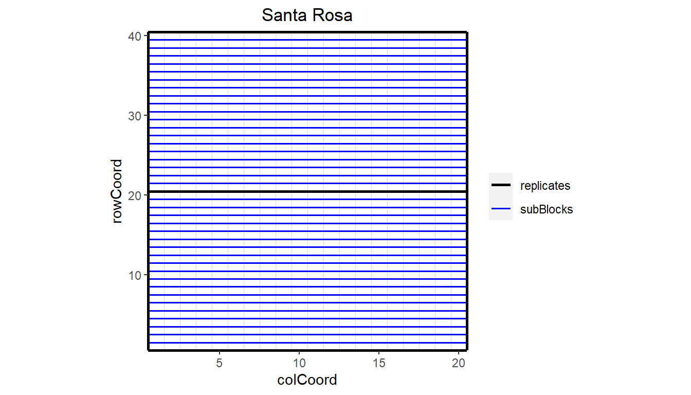
This plot can be extended by highlighting interesting genotypes in the layout.
## Plot the layout for SR_FI_11 with genotypes G278 and G279 highlighted. plot(wheatTD, trials = "SR_FI_11", highlight = c("G278", "G279"))
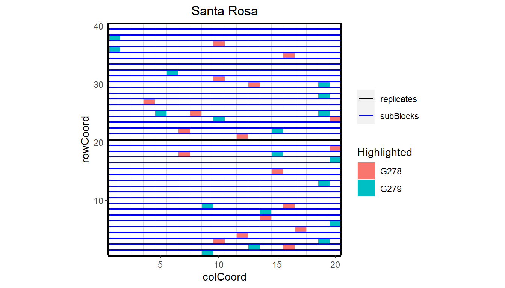
It is also possible to color the subBlocks within the field.
## Plot the layout for SR_FI_11, color subBlocks. plot(wheatTD, trials = "SR_FI_11", colorSubBlock = TRUE)
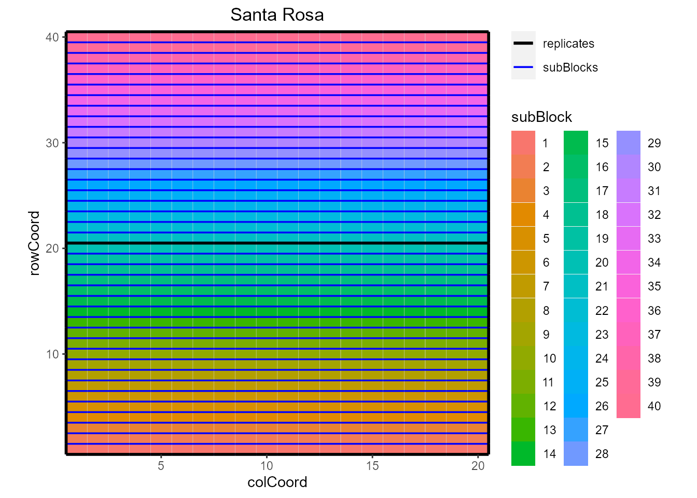
Highlighting genotypes and coloring subBlocks cannot be done simultaneously. If both options are specified, only highlighting is done.
Finally, it is possible to add the names of the genotypes to the layout.
## Plot the layout for SR_FI_11, color subBlocks. plot(wheatTD, trials = "SR_FI_11", showGeno = TRUE)
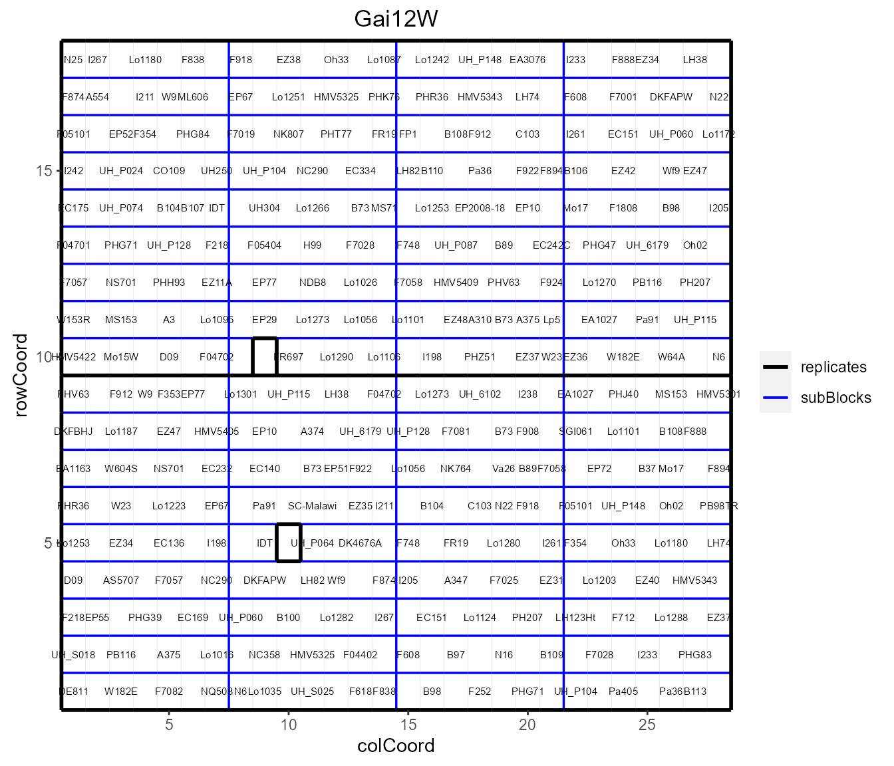
A second type of plot displays the trial locations on a map. This plot is made based on trLat and trLong in the meta data. If latitude or longitude is not available for a certain location, then this location is not plotted. If the locations are very close together, the resulting map can become quite small. The parameters minLatRange and minLongRange can be used to extend the minimum range of latitude and longitude respectively to address this issue.
## Plot the locations of the trials on a map. plot(wheatTD, plotType = "map")
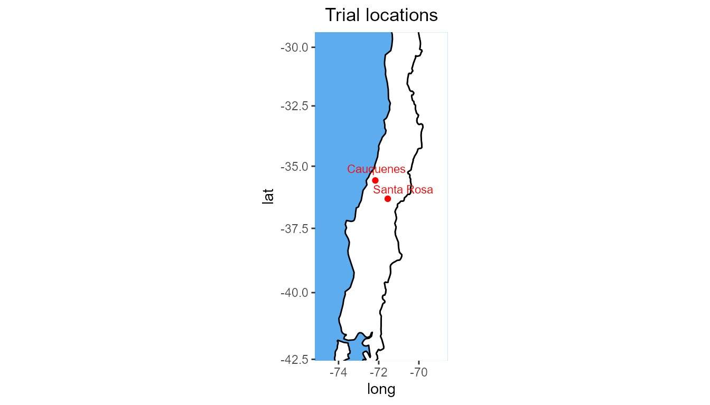
Boxplots can be made to get an idea of the contents of the data in the TD object. By default a box is plotted per trial in the data for the specified traits. Boxplots for multiple traits can be made at once.
## Create a boxplot for grain yield. plot(wheatTD, plotType = "box", traits = "GY")
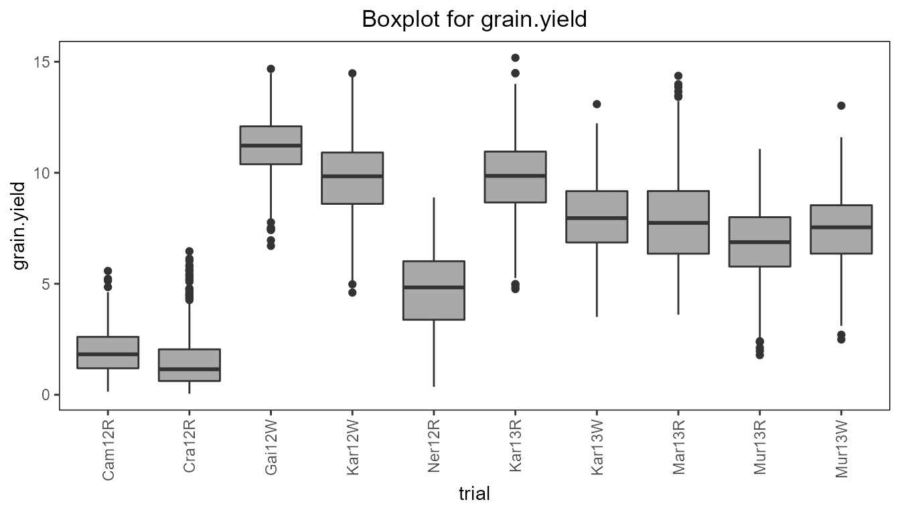
The trials in the boxplot can be grouped using the parameter groupBy. Colors can be applied to groups within trials using the parameter colorTrialBy. The boxes for the (groups of) trials can be ordered using orderBy. Boxes can be ordered by an external vector or by the group mean.
## Create a boxplot for grain yield with boxes grouped by year and repIds within ## years colored. plot(wheatTD, plotType = "box", traits = "GY", groupBy = "year", colorTrialBy = "repId", orderBy = "descending")
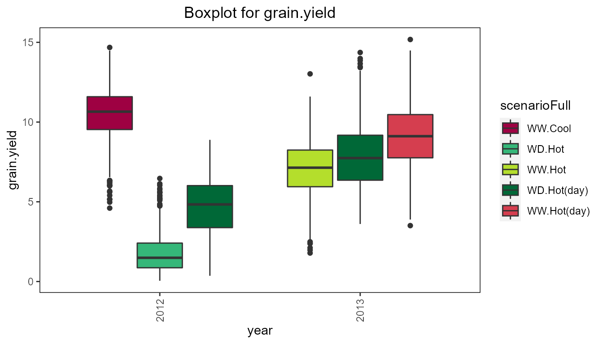
Another plot that can be made is a plot of the correlations between the fields for a specified trait. The order of the plotted fields is determined by clustering them and plotting closely related field close to each other.
## Create a correlation plot for grain yield. plot(wheatTD, plotType = "cor", traits = "GY")
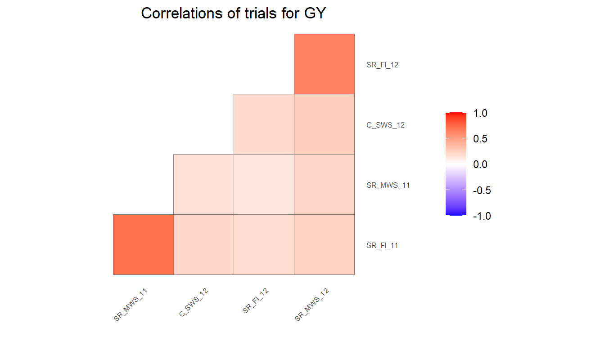
Finally a scatter plot matrix can be made. The lower left of the matrix contains scatter plots between trials. The diagonal contains histograms of the data per trial. It is possible to calculate the correlation between environments and print it in the scatter plots by specifying addCorr. addCorr takes the values “tl” (top left), “tr” (top right), “bl” (bottom left) or “br” (bottom right). This indicates where the correlation is placed in each of the scatter plots. It is possible to color the genotypes in the plots by a variable in the TD object by specifying colorGenoBy.
## Create a scatter plot matrix for grain yield. ## Add correlations between trials in top left of scatter plots. plot(wheatTD, plotType = "scatter", traits = "GY", addCorr = "tl")
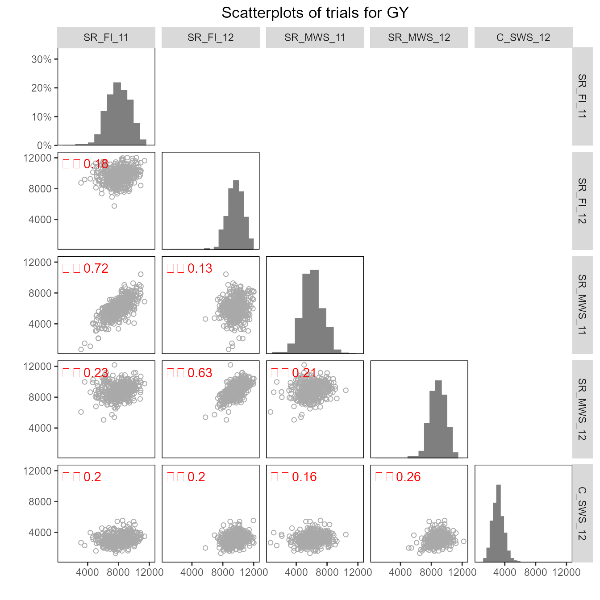
After creating a TD object, a model can be fitted on the trial data. This is done using the function fitTD. The exact model fitted depends on the design of the trial (see 3.1). The design can be given as a parameter in the function or included in the meta data of the TD object as described in 2.3. In the former case, the same model will be fitted for all trials, in the latter, different models can be fitted for different trials. If both are available the function parameter will always be leading.
The output of fitTD is an object of class STA (Single Site Analysis), a list of fitted models with one item for each trial the model was fitted for.
fitTD uses three different engines for fitting the models, namely SpATS (Rodríguez-Álvarez et al. 2017), lme4 (Bates et al. 2015) and asreml (Butler et al. 2017). For models with row column or resolvable row column design, SpATS is the default engine, for the other models lme4. This can always be overruled by specifying the function parameter engine.
Models can be fitted for five different trial designs. These are listed in the following table with their respective model specifications.
| design | code | model fitted |
|---|---|---|
| incomplete block design | ibd | trait = genotype + subBlock + \(\epsilon\) |
| resovable incomplete block design | res.ibd | trait = genotype + repId + repId:subBlock + \(\epsilon\) |
| randomized complete block design | rcbd | trait = genotype + repId + \(\epsilon\) |
| row column design | rowcol | trait = genotype + rowId + colId + \(\epsilon\) |
| resolvable row column design | res.rowcol | trait = genotype + repId + repId:rowId + repId:colId + \(\epsilon\) |
In the models above, fixed effects are indicated in italics whereas random effects are indicated in bold. genotype can be fitted as fixed or as random effect depending on the value of the parameter what. Extra fixed effects may be fitted using the parameter covariates.
If SpATS is used as modeling engine, an extra spatial term is always included in the model (see 3.2). A spatial term is also included when the modeling engine is asreml and the function parameter spatial is set to TRUE.
Using the TD object wheatTD from the previous section, a model for the trial SR_FI_11 and trait GY can now be fitted on the data. The trial was set up using a resolvable row column design. This is specified in fitTD using the parameter design. Since engine is not supplied as a parameter, SpATS is used for fitting the model.
## Fit a single trial model using a model based on a resovable row column design. modWheatSp <- fitTD(TD = wheatTD, trials = "SR_FI_11", traits = "GY", design = "res.rowcol")
Note that by not supplying the what argument to the function, two models are fitted, one with genotype as a fixed effect and one with genotype as a random effect. The results of both these models are stored in the STA object modWheatSp. This is very useful for extracting different results from the model later on. A trade-off is that fitting two models takes more time than fitting only one so when fitting models on large datasets it is sensible to explicitly define what if only a subset of the results is needed as output.
## Fit a single trial model with genotype as random effect. modWheatSp2 <- fitTD(TD = wheatTD, trials = "SR_FI_11", traits = "GY", what = "random", design = "res.rowcol")
When using SpATS as a modeling engine for fitting a model, an extra spatial component is always included in the model. This spatial component is composed using the PSANOVA function in the SpATS package which uses 2-dimensional smoothing with P-splines as described in Lee, Durbán, and Eilers (2013) and in Rodríguez-Álvarez et al. (2017). See help(PSANOVA, SpATS) for a detailed description. The parameters nseg and nest.div of PSANOVA can be modified using the control parameter in fitTD.
Fitting the model in the previous section specifying the number of segments for both rows and columns as 20 works as follows
## Fit a spatial single trial model using SpATS. ## Manually specify the number of segments for rows and columns. modWheatSp3 <- fitTD(TD = wheatTD, trials = "SR_FI_11", traits = "GY", design = "res.rowcol", control = list(nSeg = c(20, 20)))
Alternatively, spatial models can be fitted using asreml as modeling engine and setting the parameter spatial = TRUE. In this case seven models are fitted and the best model, based on a goodness-of-fit criterion, either AIC or BIC, is chosen. For a full specification of the models fitted see help(fitTD). The criterion to be used can be specified using the control parameter in fitTD.
Fitting a model similar to the one above using asreml with BIC as goodness-of-fit criterion works as follows
if (requireNamespace("asreml", quietly = TRUE)) { ## Fit a spatial single trial model using asreml. modWheatAs <- fitTD(TD = wheatTD, trials = "SR_FI_11", traits = "GY", design = "res.rowcol", spatial = TRUE, engine = "asreml", control = list(criterion = "BIC")) }
The fitted models and the best model are stored in the output together with a summary table with details on the fitted models.
if (exists("modWheatAs")) { ## Overview of fitted models. print(modWheatAs$SR_FI_11$sumTab$GY, digits = 2, row.names = FALSE) } #> spatial random AIC BIC H2 row col error correlated error converge #> none <NA> 12241 12260 0.57 NA NA 1019615 NA TRUE #> AR1(x)id <NA> 12168 12187 0.63 0.44 NA 1072418 NA TRUE #> id(x)AR1 <NA> 12033 12057 0.72 NA 0.73 1420591 NA TRUE #> AR1(x)AR1 <NA> 11988 12007 0.77 0.43 0.76 1700940 NA TRUE #> AR1(x)id units 12170 12194 0.63 0.45 NA 30997 1041517 TRUE #> id(x)AR1 units 12018 12046 0.70 NA 0.88 217227 1583179 TRUE #> AR1(x)AR1 units 11931 11954 0.72 0.63 0.87 277816 1373550 TRUE
As the overview shows, the best model, the model with the lowest BIC, is AR1(x)AR1 with units in the random part of the model.
Since genotype has been fitted both as fixed and as random factor in modWheatSp it is possible to calculate both the Best Linear Unbiased Estimators (BLUEs) and the Best Linear Unbiased Predictors (BLUPs). Therefore both are printed in the summary of the model together with their respective standard errors.
## Set nBest to 5 to decrease size of output. summary(modWheatSp, nBest = 5) #> Summary statistics #> ================== #> #> Summary statistics for GY in SR_FI_11 #> #> GY #> Number of observations 794 #> Number of missing values 6 #> Mean 8015.60 #> Median 8021.00 #> Min 2239.50 #> Max 12992.00 #> First quantile 6728.50 #> Third quantile 9321.75 #> Variance 3080361.436 #> #> #> Estimated heritability #> ====================== #> #> Heritability: 0.65 #> #> Predicted means (BLUEs & BLUPs) #> =============================== #> Best 5 genotypes #> BLUEs SE BLUPs SE #> G369 10794.16 631.56 9699.79 499.86 #> G349 10496.22 616.16 9620.12 494.17 #> G341 10438.79 615.10 9525.35 494.00 #> G227 10188.20 618.69 9408.57 496.59 #> G271 10154.69 612.42 9455.27 493.64
Two types of plots can be made for fitted models.
The first is a series of four plots, a histogram of the residuals, normal quantiles of the residuals, a scatter plot of residuals against fitted values and a scatter plot of absolute value of residuals against fitted values. These plots can be made by calling plot on the STA object. Plots can be made for multiple trials and multiple traits simultaneously, either for the model with genotype as fixed effect or for the model with genotype as random effect. By default plots are made for all trials and all traits, but this can be restricted using the parameters trials and traits. If only one model is fitted the results of the fitted model will be plotted. In case both models were fitted, as a default the results will be plotted for the model with genotype fixed. This can be changed using the parameter what.
## Base plots for the model with genotype fitted as random effect. plot(modWheatSp, plotType = "base", what = "random")
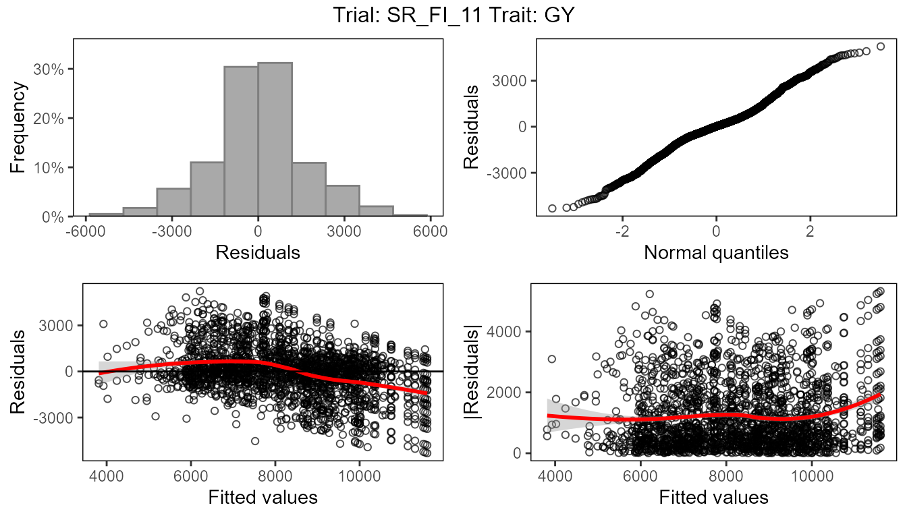
The second type of plot consists of five plots, spatial plots of the raw data, fitted values, residuals and either BLUEs or BLUPs, and a histogram of the BLUEs or BLUPs. If SpATS was used for modeling an extra plot with the fitted spatial trend is included. The spatial trend can be displayed on the original scale (spaTrend = "raw") or as percentega (spaTrend = "percentage"). In the latter case the spatial trend is scaled (i.e., divided by the average of the observed response variable of interest across the field) and displayed as percentage. The call for creating these plots differs from the base plots only by an extra parameter plotType = "spatial". Note that spatial plots can only be made if spatial information, i.e. rowCoord and colCoord, is available in the TD object.
## Spatial plot for the model with genotype fitted as fixed effect. plot(modWheatSp, plotType = "spatial")
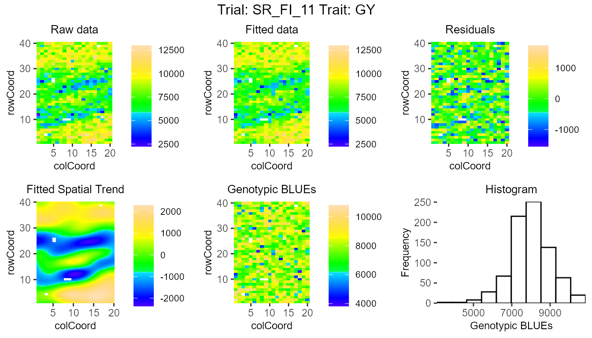
## Spatial plot for the model with genotype fitted as fixed effect. ## Display the spatial trend as a percentage. plot(modWheatSp, plotType = "spatial", spaTrend = "percentage")
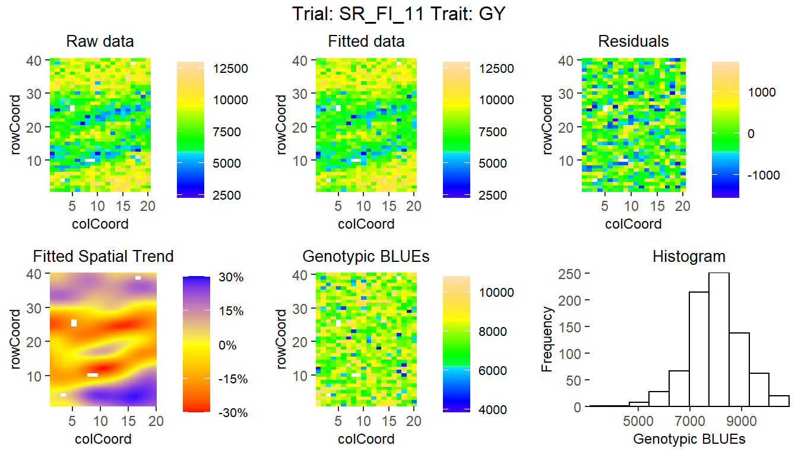
After fitting a model, it is possible to run an outlier detection on the results. This outlier detection che cks the residuals in the fitted model and compares them to a limit. Observations with a residual higher than this limit are marked as outliers. The default limit is calculated based on the number of observations in the data. Setting a custom limit is also possible.
## Outlier detection for the model with genotype fitted as random. outliers <- outlierSTA(modWheatSp, traits = "GY", what = "random") #> Large standardized residuals. #> #> trial genotype trait value res outlier #> SR_FI_11 G341 GY 11655.5 3.088670 TRUE #> SR_FI_11 G271 GY 12698.5 3.734490 TRUE #> SR_FI_11 G233 GY 10215.5 3.100760 TRUE #> SR_FI_11 G248 GY 5236.5 -3.188398 TRUE #> SR_FI_11 G279 GY 9436.0 3.327241 TRUE
The output of the outlier detection function is a data.frame with the outliers and of vector of indices of the outliers in the original data. This vector can be used for removing outliers from the data.
It is possible to run outlier detection on a model with genotype fitted as fixed, but when doing so it is only possible to detect outliers in genotypes that are replicated in the data. For unreplicated genotypes the residual will always be 0 and so these will never be marked as outliers.
To get an idea of the magnitude of the outliers, the parameter commonFactors can be used to see the values of observations with similar characteristics. In the example below, for all outliers also the other observations for the same genotype are shown.
## Outlier detection for the model with genotype fitted as random. ## A custom limit is used and commonFactors set to genotype. outliers <- outlierSTA(modWheatSp, traits = "GY", what = "random", rLimit = 3.2, commonFactors = "genotype") #> Large standardized residuals. #> #> trial genotype trait value res outlier #> SR_FI_11 G271 GY 6874.0 -1.45226911 FALSE #> SR_FI_11 G271 GY 12698.5 3.73448956 TRUE #> SR_FI_11 G279 GY 10921.0 2.63848371 FALSE #> SR_FI_11 G279 GY NA NA NA #> SR_FI_11 G279 GY 5979.0 -1.80652528 FALSE #> SR_FI_11 G279 GY 9994.0 0.06561454 FALSE #> SR_FI_11 G279 GY 10286.5 0.63597836 FALSE #> SR_FI_11 G279 GY 6816.0 0.14788005 FALSE #> SR_FI_11 G279 GY 8140.0 -1.59086618 FALSE #> SR_FI_11 G279 GY 10018.0 2.12546002 FALSE #> SR_FI_11 G279 GY 6582.5 -1.17340841 FALSE #> SR_FI_11 G279 GY 6568.0 -0.30824124 FALSE #> SR_FI_11 G279 GY 8874.5 -1.80568241 FALSE #> SR_FI_11 G279 GY 6633.5 0.56563457 FALSE #> SR_FI_11 G279 GY 5273.0 -2.04657749 FALSE #> SR_FI_11 G279 GY 8669.5 -0.13978318 FALSE #> SR_FI_11 G279 GY 9325.5 0.38503077 FALSE #> SR_FI_11 G279 GY 8011.5 -0.19252792 FALSE #> SR_FI_11 G279 GY 7365.0 -0.54197710 FALSE #> SR_FI_11 G279 GY 9436.0 3.32724080 TRUE
For STA objects there is a report function available in the statgenSTA package. This function creates a pdf report summarizing the main results of the fitted model. Also the tex file and figures used for generating the pdf report are saved. By editing the tex file it is possible to modify the report to ones needs, creating high flexibility.
When no outfile is specified, reports will be created with a default names, e.g. “modelReport_trial_trait_fixed_timestamp.pdf”, in the current working directory. The parameter outfile can be used to change the name and location of the report. The value of this parameter should be a valid location and name for a pdf file, i.e. including the postfix “.pdf”. Non-existing directories are created by the report function. When an outfile is supplied, trial, trait and modeltype (fixed or random) are concatenated to it in the name of the report.
The reports contains general information on the model fitted, a summary of the results, the plots described in the previous section, a list of best (highest BLUEs or BLUPs) genotypes and a scatter plot of all genotypes and their BLUEs or BLUPs. For some traits a low value might mean a genotype is performing well. To correctly show the best genotypes in the report in this case, set the parameter descending to TRUE in the report function.
## Create a report in the current working directory report(modWheatSp) ## Create a report for the model with genotype fitted as random. report(modWheatSp, outfile = "./myReports/wheatReport.pdf", what = "random")
Reporting for an STA object can be done for multiple trials, traits and modeltypes simultaneously. For each combination of trial, trait and modeltype, a separate .pdf report will be created. Parameters traits, trials and what can be used for specifying the models for which the reports should be made.
After fitting a model, various results can be extracted or calculated from the fitted model using the function extractSTA. This can be anything from a single result for one trait and one trial to a list of different results for all models in an STA object. The results that can be extracted depend on the type of model fitted and sometimes on the modeling engine as well. For example, BLUEs can only extracted if genotype was fitted as fixed effect. On the other hand, BLUPs and heritabilities can only be calculated and extracted if genotype was fitted as random effect.
All results that can be extracted are shown in the table below. In the first column is the result. This is also the value to be used for the parameter what in extractSTA needed to extract the corresponding result. The second column shows what model needs to be fitted in order to be able to extract the result. Here F stands for genotype as fixed effect and R for genotype as random effect. The last column gives a short description of the result that will be extracted and, where needed, also states for which modeling engines it can be extracted.
| result | model | description |
|---|---|---|
| BLUEs | F | Best Linear Unbiased Estimators |
| seBLUEs | F | standard errors of the BLUEs |
| ue | F | unit errors - only for lme4 and asreml |
| varCompF | F | variance components for the model with genotype as fixed component |
| fitted | F | fitted values for the model with genotype as fixed component |
| residF | F | residuals for the model with genotype as fixed component |
| stdResF | F | standardized residuals for the model with genotype as fixed component |
| wald | F | results of the wald test - only for lme4 and asreml |
| CV | F | Coefficient of Variation - only for lme4 and asreml |
| rDfF | F | residual degrees of freedom for the model with genotype as fixed component |
| sed | F | standard error of difference - only for asreml |
| lsd | F | least significant difference - only for asreml |
| BLUPs | R | Best Linear Unbiased Predictors |
| seBLUPs | R | standard errors of the BLUPs |
| heritability | R | broad sense heritability |
| varCompR | R | variance components for the model with genotype as random component |
| varGen | R | genetic variance component |
| varErr | R | residual variance component |
| varSpat | R | spatial variance components - only for SpATS |
| rMeans | R | fitted values for the model with genotype as random component |
| ranEf | R | random genetic effects |
| residR | R | residuals for the model with genotype as random component |
| stdResR | R | standardized residuals for the model with genotype as random component |
| rDfR | R | residual degrees of freedom for the model with genotype as random component |
| effDim | R | effective dimensions - only for SpATS |
| ratEffDim | R | ratios of the effective dimensions - only for SpATS |
Using what = "all" in the function call, extracts all results possible for the fitted model. This is also the default.
Below are some examples of extracting results from a fitted model. Recall that modWheatSp contains two fitted models, one with genotype as fixed effect and one with genotype as random effect.
## Extract BLUEs BLUEsWheat <- extractSTA(STA = modWheatSp, what = "BLUEs") ## Extract BLUEs and BLUPs predWheat <- extractSTA(STA = modWheatSp, what = c("BLUEs", "BLUPs"))
Both BLUEsWheat and predWheat are lists with one item, the trial used for modeling. In general, when extracting results, there will be an item in the list for every trial for which results were extracted. These items are a list themselves with an item for every statistic that has been extracted, so one item for BLUEsWheat, a data.frame containing the BLUEs, and two for predWheat, the data.frames containing BLUEs and BLUPs respectively.
The data.frame BLUEs in either of the lists consists of only two columns, genotype and GY. If the model would have been fitted for multiple traits all these traits would become columns in the data.frame. It might be useful to add extra columns from the data used to fit the model to the output. This can be achieved using the paramater keep in extractSTA. To include the trial in the output, useful for easily combining several data.frames with BLUEs and using them for a GxE analysis, use the following command
## Extract BLUEs from the fitted model. BLUEsWheat2 <- extractSTA(STA = modWheatSp, what = "BLUEs", keep = "trial") head(BLUEsWheat2[["SR_FI_11"]]$BLUEs) #> NULL
Not every column from the original TD object can be included in the extracted data in this way. Only columns that, for each genotype, have only one value per trial can be included. For example, the column repId containing replicates, that has several different values for a single genotype within each trial, cannot be included. When trying to do so it will be ignored with a warning.
It is however possible to include repId when extracting fitted values, since for each observation in the original data a fitted value is computed.
## Extract fitted values from the model. fitVals <- extractSTA(STA = modWheatSp, what = "fitted", keep = c("trial", "repId")) head(fitVals[["SR_FI_11"]]$fitted) #> NULL
To use the BLUEs or BLUPs from the fitted model in a GxE analysis they have to be converted again into a TD object. For this the function STAtoTD can be used. It creates a TD object from a fitted model outputting one or more of the following: BLUEs, standard errors of BLUEs, BLUPs and standard errors of BLUPs. Optionally, a column wt with weights (calculated as \((1 / seBLUEs)^2\)) can be added as well. In the same way as described in the previous section extra columns can be added to the output using the parameter keep.
## Fit a model for all trials with genotype as fixed factor. modWheatSpTot <- fitTD(TD = wheatTD, traits = "GY", what = "fixed", design = "res.rowcol") ## Create a TD object containing BLUEs and standard errors of BLUEs. TDGxE <- STAtoTD(STA = modWheatSpTot, what = c("BLUEs", "seBLUEs")) ## Add weights to the output. TDGxE2 <- STAtoTD(STA = modWheatSpTot, what = c("BLUEs", "seBLUEs"), addWt = TRUE)
Performing GxE analysis on the TD object can be done using the statgenGxE package.
Bates, Douglas, Martin Mächler, Ben Bolker, and Steve Walker. 2015. “Fitting Linear Mixed-Effects Models Using Lme4.” Journal of Statistical Software 67 (1). https://doi.org/10.18637/jss.v067.i01.
Butler, D. G., B. R. Cullis, A. R. Gilmour, B. G. Gogel, and R. Thompson. 2017. “ASReml-R Reference Manual Version 4.” https://www.vsni.co.uk/.
Lado, Bettina, Ivan Matus, Alejandra Rodríguez, Luis Inostroza, Jesse Poland, François Belzile, Alejandro del Pozo, Martín Quincke, Marina Castro, and Jarislav von Zitzewitz. 2013. “Increased Genomic Prediction Accuracy in Wheat Breeding Through Spatial Adjustment of Field Trial Data.” G3: Genes\(\vert\)Genomes\(\vert\)Genetics 3 (12): 2105–14. https://doi.org/10.1534/g3.113.007807.
Lee, Dae-Jin, María Durbán, and Paul Eilers. 2013. “Efficient Two-Dimensional Smoothing with P-Spline Anova Mixed Models and Nested Bases.” Computational Statistics & Data Analysis 61 (May): 22–37. https://doi.org/10.1016/j.csda.2012.11.013.
Rodríguez-Álvarez, María, Martin P. Boer, Fred van Eeuwijk, and Paul H. C. Eilers. 2017. “Correcting for Spatial Heterogeneity in Plant Breeding Experiments with P-Splines.” Spatial Statistics 23 (October): 52–71. https://doi.org/10.1016/j.spasta.2017.10.003.